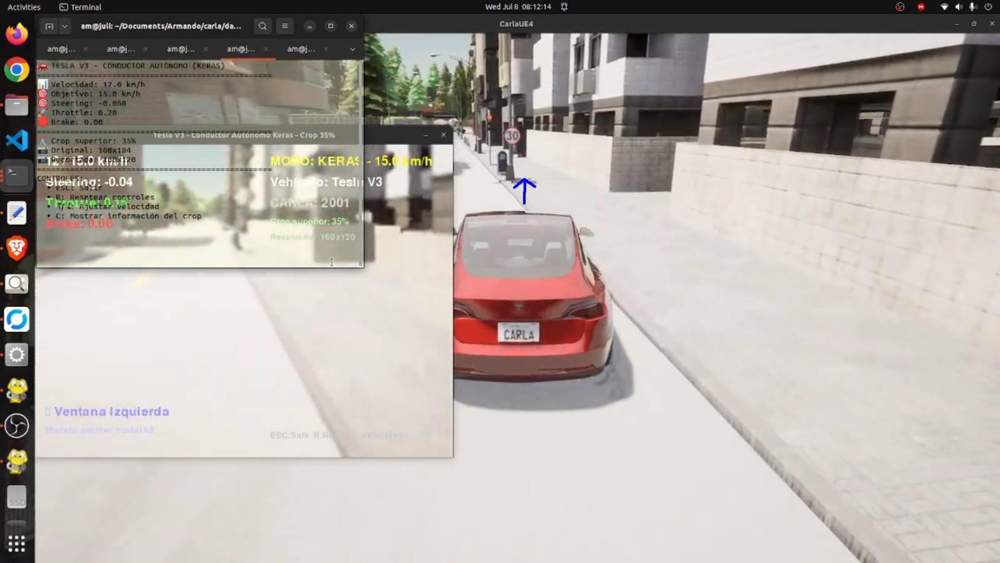
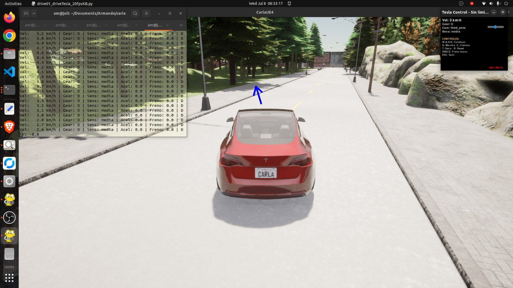
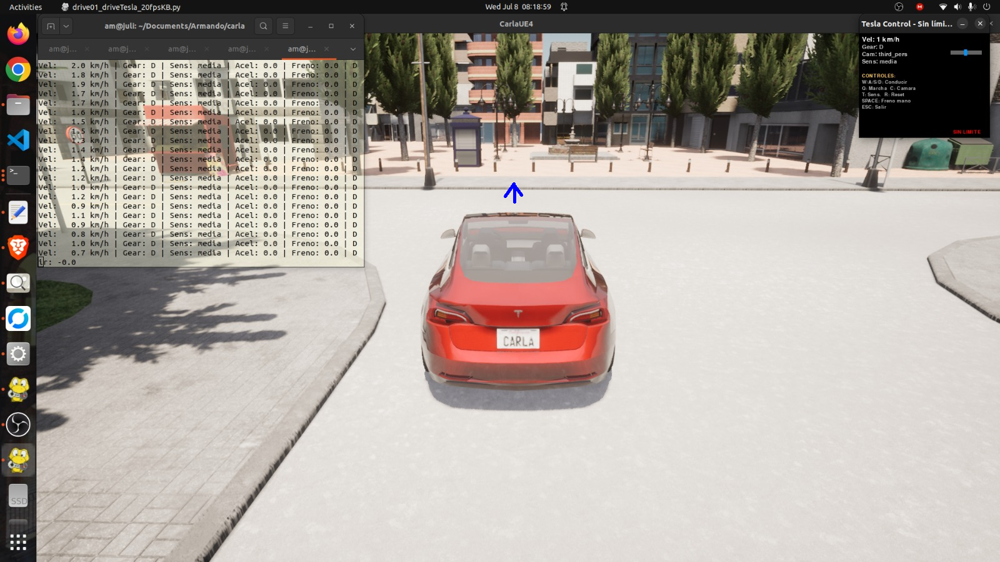
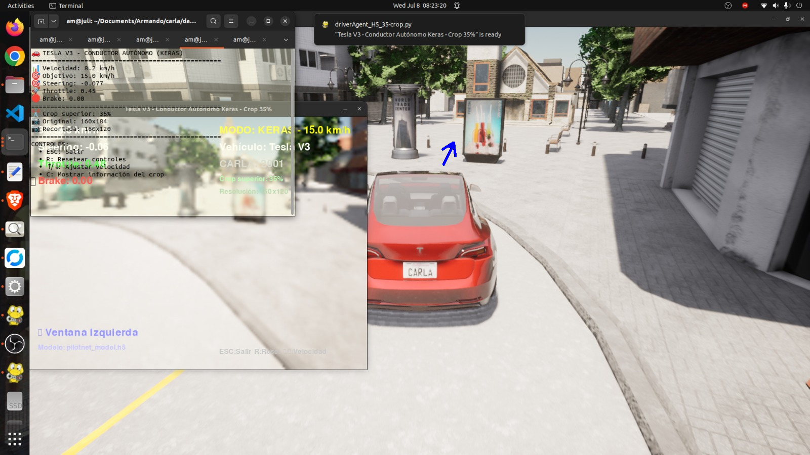
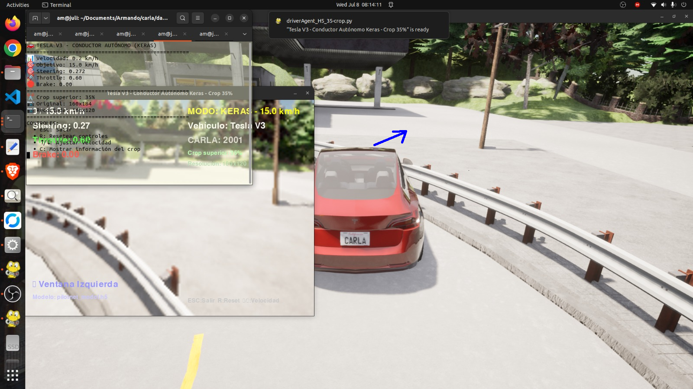

Validation in Town02 – Stability Gains & Remaining Challenges
July 9, 2026
Overview
This week we evaluated the model trained with 62,000 samples from Town 01 and Town 04 (composition: 25% drunk dagger, 45% straight, 15% left turns, 15% right turns) on the unseen Town 02 validation track.
The results show significant improvements in stability and cornering, but also reveal new failure modes related to visual distractors not present in the training towns.
✅ Improvements – Town02 Validation
Stability improvement
FIXED The vehicle no longer oscillates. In the videos, some steering changes occur but only in specific locations with features not present in Town 01 or Town 04.
Cornering
IMPROVED Both left and right turns are taken correctly. The only exception occurs when the vehicle is not properly positioned in the right lane (see second video).
Watch on YouTube
Watch on YouTube
Videos show stable driving with correct lane keeping and smooth turns in most scenarios.
⚠️ Remaining Issues – Visual Distractors
1. Confusion & Attraction to Visual Distractors
CRITICAL The model is “confused” and “attracted” to areas such as plazas, forests, light‑coloured walls, and open spaces that do not exist in Town 01 or Town 04.
When confused, the vehicle generally loses the lane, ending up in the left lane, which then causes errors when taking curves. When confused on the right side, the vehicle leaves the road entirely.
2. No Recovery After Lane Departure
CRITICAL Once the vehicle has been confused and departed from the lane, it does not recover. The distractor continues to “attract” the vehicle, preventing lane recovery until the vehicle no longer sees that distractor.
Examples of confusing scenes
The following images show specific scenarios where the model loses the lane due to visual distractors:





Figure 1 – Scenes that cause the model to lose the lane. These elements are absent from the training towns (Town 01 and Town 04).
💡 Proposed Solutions
Add new towns with distractors: Since the confusing places do not exist in the training towns, the idea is to include places like plazas and forests from other towns. The candidate is Town 12, which features diverse scenery including plazas, wooded areas, and varied architecture.
By incorporating data from Town 12, the model will learn that these visual patterns are not lane indicators, reducing the attraction effect.
- Collect additional driving data in Town 12, focusing on areas with plazas, forests, light‑coloured walls, and open spaces.
- Augment the dataset with these new scenes while maintaining the proven composition (25% drunk, 45% straight, 15% left, 15% right).
- Re‑train the model with the expanded dataset and re‑validate on Town 02 and Town 06.
📊 Dataset Composition & Conclusions
Dataset used for training: 62,000 samples from Town 01 and Town 04.
| Maneuver | Percentage | # Samples (approx) |
|---|---|---|
| Drunk DAgger (soft) | 25% | 15,500 |
| Straight driving | 45% | 27,900 |
| Left turns | 15% | 9,300 |
| Right turns | 15% | 9,300 |
Key conclusions
- Improved generalisation: The dataset concentrated on providing a larger number of driving examples from both Town 01 and Town 04. This improved generalisation, showing high performance compared to previous models (which had more oscillations and poorly taken turns).
- Noise injection & cropping contribute to stability: Both the inclusion of noise injection and the 35% top cropping contributed to driving stability, essentially eliminating oscillations.
- Visual distractors are the new frontier: The remaining failures are caused by visual elements absent from the training set, not by dynamic instability.
🔜 Next Steps (Week 37)
- Collect data in Town 12 – focus on plazas, forests, light‑coloured walls, and open spaces.
- Expand dataset – add Town 12 samples to the existing 62k dataset while keeping the same proportional composition.
- Retrain model – use the augmented dataset and re‑evaluate on Town 02 and Town 06.
- If successful, this will address the visual distraction issue and further improve generalisation.
🎥 Validation Videos
youtu.be/6MMzUM2wFr8
Stable driving, correct turns, minor corrections in challenging sections.
youtu.be/xCLWHbhBSxA
Shows the “attraction” effect to distractors, leading to lane departure and no recovery.
References
- [1] Bojarski, M., et al. (2016): End to end learning for self‑driving cars (PilotNet). arXiv:1604.07316
- [2] Mateus, A. (2026): Week 35 report – Large‑scale dataset & methodology comparison.
- [3] CARLA Simulator (2026): Town 12 documentation – map features and scenery.
— Armando Mateus, Robotics Lab URJC
📌 WEEK 36 SUMMARY – JULY 9, 2026
✅ Stability improved: No oscillations; smooth driving in Town 02.
✅ Cornering improved: Turns taken correctly except when lane position is off.
⚠️ New failure mode: Visual distractors (plazas, forests, light walls, open spaces) cause lane departure.
⚠️ No recovery: Once confused, the vehicle does not regain the lane until the distractor is out of view.
💡 Proposed fix: Add Town 12 data to include distractors in training.
📊 Training dataset: 62k samples (25% drunk, 45% straight, 15% left, 15% right).
🖼️ Confusion examples: 5 images showing wall, forest, plaza (×2), and open space.